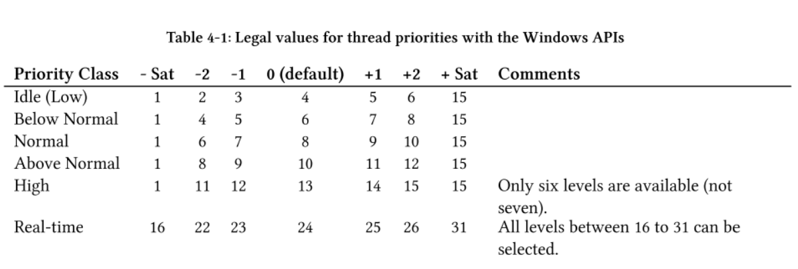
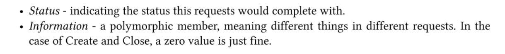

Windows内核编程04|内核工作流程
1 简介
在应用层利用SetThreadPriority等API设置线程优先级是受到进程优先级限制的，所以本节就计划通过编写一个驱动程序和应用程序相结合突破这种限制。本节代码放在了Github上访问此链接

2 驱动程序初始化
先按照上一节的介绍来了解一下创建一个驱动程序的基本流程：入口函数，卸载函数，驱动支持的派遣函数，设备对象，指向设备对象的符号链接。
2.1 入口函数和卸载函数
void PriorityBoosterUnload(_In_ PDRIVER_OBJECT DriverObject);
// DriverEntry
extern "C" NTSTATUS DriverEntry(_In_ PDRIVER_OBJECT DriverObject, _In_ PUNICODE_STRING RegistryPath)
{
DriverObject->DriverUnload = PriorityBoosterUnload;
return STATUS_SUCCESS;
}
void PriorityBoosterUnload(_In_ PDRIVER_OBJECT DriverObject)
{
}
每个驱动程序都需要支持IRP_MJ_CREATE 和 IRP_MJ_CLOSE ，所以我们需要在DriverEntry中添加IRP对应的派遣函数，在本节例子中Create和Close指向的派遣函数（PriorityBoosterCreateClose）只是做了批准请求的操作。
NTSTATUS PriorityBoosterCreateClose(_In_ PDEVICE_OBJECT DeviceObject, _In_ PIRP Irp)
{
UNREFERENCED_PARAMETER(DeviceObject);
Irp->IoStatus.Status = STATUS_SUCCESS;
Irp->IoStatus.Information = 0;
IoCompleteRequest(Irp, IO_NO_INCREMENT);
return STATUS_SUCCESS;
}
DriverObject->MajorFunction[IRP_MJ_CREATE] = PriorityBoosterCreateClose;
DriverObject->MajorFunction[IRP_MJ_CLOSE] = PriorityBoosterCreateClose;
2.2 创建设备对象
典型的软件驱动只需要一个设备对象，并用一个暴露到应用层的符号链接指向它，这样用户模式客户程序就能得到驱动程序设备对象的句柄。
UNICODE_STRING devName = RTL_CONSTANT_STRING(L"\\Device\\PriorityBooster");
PDEVICE_OBJECT DeviceObject;
NTSTATUS status = IoCreateDevice(
DriverObject, // our driver object,
0, // no need for extra bytes,
&devName, // the device name,
FILE_DEVICE_UNKNOWN, // device type,
0, // characteristics flags,
FALSE, // not exclusive,
&DeviceObject // the resulting pointer
);
if (!NT_SUCCESS(status))
{
KdPrint(("Failed to create device object (0x%08X)\n", status));
return status;
}
UNICODE_STRING symLink = RTL_CONSTANT_STRING(L"\\??\\PriorityBooster");
status = IoCreateSymbolicLink(&symLink, &devName);
if (!NT_SUCCESS(status))
{
KdPrint(("Failed to create symbolic link (0x%08X)\n", status));
IoDeleteDevice(DeviceObject);
return status;
}
3 Create和Close派遣函数
IRP是半文档化的结构用来表示一个请求，它通常来自执行体中的管理器之一：I/O管理器，即插即用（PnP）管理器和电源管理器。IRP从不单独到来，它总会有一个或多个IO_STACK_LOCATION类型结构相伴，在我们的例子中只有一个IO_STACK_LOCATION，在更加复杂的环境中当前驱动程序的上面或者下面会有过滤驱动程序，会存在多个IO_STACK_LOCATION实例，总的来说就是设备栈的每层都包含一个该实例。
我们先设置IRP的IoStatus（IO_STACK_LOCATION）

然后调用IoCompleteRequest函数去完成IRP，他会把IRP传回它的创建者（通常是I/O管理器），然后管理器通知客户程序操作已经完成。
NTSTATUS PriorityBoosterCreateClose(_In_ PDEVICE_OBJECT DeviceObject, _In_ PIRP Irp)
{
UNREFERENCED_PARAMETER(DeviceObject);
Irp->IoStatus.Status = STATUS_SUCCESS;
Irp->IoStatus.Information = 0;
IoCompleteRequest(Irp, IO_NO_INCREMENT);
return STATUS_SUCCESS;
}
4 客户端程序
4.1 信息传递给驱动程序
从应用程序的角度来说可以使用CreateFile打开驱动程序暴露的符号链接，并使用WriteFile, ReadFile 和DeviceIoControl与驱动程序通信。因为本例子主要是给驱动程序传递消息，所以我们现在可以在创建一个名为Booster的应用层项目，利用DeviceIoControl函数和符号链接与驱动通信。
应用程序和驱动程序之间通过DeviceIoControl的通讯需要一个控制代码和一个输入缓冲区，输入缓冲区需要规定驱动和应用程序都能理解（使用）的约定数据格式，本节例子需要线程ID和要设置的线程优先级，数据结构如下：
typedef struct _ThreadData {
ULONG ThreadId;
int Priority;
}ThreadData, * PThreadData;
下一步需要定义控制代码，控制代码需要使用CTL_CODE宏来定义。
#define PRIORITY_BOOSTER_DEVICE 0x8000
#define IOCTL_PRIORITY_BOOSTER_SET_PRIORITY CTL_CODE(PRIORITY_BOOSTER_DEVICE, 0x800, METHOD_NEITHER, FILE_ANY_ACCESS)
做完以上操作Booster应用程序就可以写出来了，主函数代码如下：
int main(int argc, const char* argv[])
{
if (argc < 3)
{
printf("Usage: Booster <threadid> <priority>\n");
return 0;
}
HANDLE hDevice = CreateFile(L"\\\\.\\PriorityBooster", GENERIC_WRITE, FILE_SHARE_WRITE, nullptr, OPEN_EXISTING, 0, nullptr);
if (hDevice == INVALID_HANDLE_VALUE) return
Error("Failed to open device");
ThreadData data;
data.ThreadId = atoi(argv[1]); // command line first argument
data.Priority = atoi(argv[2]); // command line second argument
DWORD returned;
BOOL success = DeviceIoControl(
hDevice,
IOCTL_PRIORITY_BOOSTER_SET_PRIORITY,
&data,
sizeof(data),
nullptr,
0,
&returned,
nullptr);
if (success)
printf("Priority change succeeded!\n");
else
Error("Priority change failed!");
CloseHandle(hDevice);
}
5 DeviceIoControl派遣函数
目前本节例子中所有的驱动代码都导向这个派遣函数，它为给定的线程设置请求的优先级。我们先要检查控制代码，驱动程序通常会支持多个控制代码，一旦发现了未识别的控制代码，我们要立即停止请求：
NTSTATUS PriorityBoosterDeviceControl(_In_ PDEVICE_OBJECT, _In_ PIRP Irp)
{
// get our IO_STACK_LOCATION
auto stack = IoGetCurrentIrpStackLocation(Irp); // IO_STACK_LOCATION*
auto status = STATUS_SUCCESS;
switch (stack->Parameters.DeviceIoControl.IoControlCode)
{
case IOCTL_PRIORITY_BOOSTER_SET_PRIORITY:
{
// do the work
}
default:
{
status = STATUS_INVALID_DEVICE_REQUEST;
break;
}
}
Irp->IoStatus.Status = status;
Irp->IoStatus.Information = 0;
IoCompleteRequest(Irp, IO_NO_INCREMENT);
return status;
}
下一步需要检查接收到的缓冲区是否足够大以及data是否为nullptr。
auto len = stack->Parameters.DeviceIoControl.InputBufferLength;
if (len < sizeof(ThreadData))
{
status = STATUS_BUFFER_TOO_SMALL;
break;
}
auto data = (ThreadData*)stack->Parameters.DeviceIoControl.Type3InputBuffer;
if (data == nullptr)
{
status = STATUS_INVALID_PARAMETER;
break;
}
然后检查优先级是否在1到31的合法范围内，如果不是就终止。
if (data->Priority < 1 || data->Priority > 31)
{
status = STATUS_INVALID_PARAMETER;
break;
}
利用ntifs.h的PsLookupThreadByThreadId函数将应用程序传进来的TID转换成指向KTHREAD对象的指针，并通过KeSetPriorityThread函数最终达到我们修改线程优先级的目的。
PETHREAD Thread;
status = PsLookupThreadByThreadId(ULongToHandle(data->ThreadId), &Thread);
if (!NT_SUCCESS(status))
break;
KeSetPriorityThread((PKTHREAD)Thread, data->Priority);
ObDereferenceObject(Thread);
KdPrint(("Thread Priority change for %d to %d succeeded!\n",
data->ThreadId, data->Priority));
至此驱动程序和用户程序的大致流程都已经完成，完整的代码可以查看本学习笔记的Github仓库
6 部署与测试
可以查看第二章开始内核开发的2.3小节，流程大致相同。
- 原文作者：Binean
- 原文链接：https://bzhou830.github.io/post/20191230WindowsKernelPrograming04KernelFlow/
- 版权声明：本作品采用知识共享署名-非商业性使用-禁止演绎 4.0 国际许可协议进行许可，非商业转载请注明出处（作者，原文链接），商业转载请联系作者获得授权。
 =======
=======
 >>>>>>> Stashed changes
>>>>>>> Stashed changes
 =======
=======
 >>>>>>> Stashed changes
>>>>>>> Stashed changes